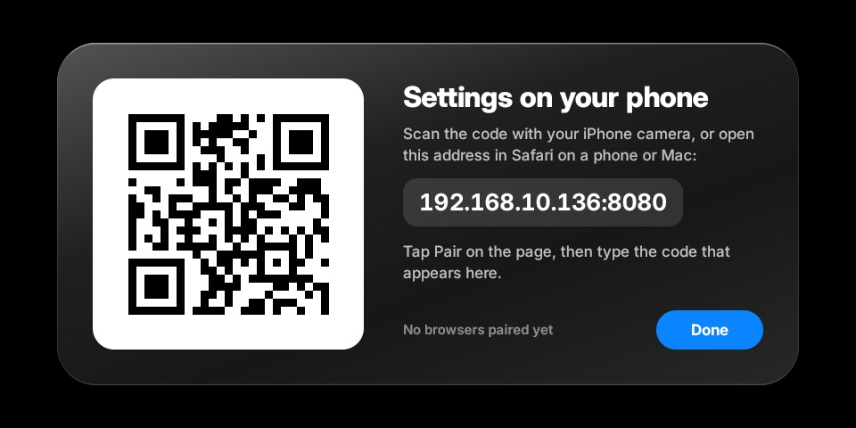

Before you start
- An Echo Show 5, 1st generation (2019), codename
checkers. The 2nd generation (2021,cronos) and other Echo models aren't supported. - Unlocked and running the unofficial LineageOS 18.1 (Android 11). EchoHome doesn't cover unlocking. Follow the LineageOS 18.1 for the Echo Show 5 thread on XDA, which links the unlock steps.
- A computer with adb, from Google's SDK Platform-Tools (macOS, Windows or Linux).
- The Echo and the computer on the same Wi-Fi.
Unlocking and flashing can brick an Echo, and they're at your own risk. EchoHome itself is an ordinary Android app: removing it gives you back the LineageOS launcher (see Going back).
Turn on wireless debugging on the Echo
- Open Settings › About tablet and tap Build number seven times, until it says you're a developer.
- Go back to Settings › System › Developer options and turn on Wireless debugging. Allow it for your Wi-Fi network when asked.
- Tap Wireless debugging to open it. Keep this screen open: it shows the Echo's IP address and port, and Pair device with pairing code.
Menu names can differ slightly between LineageOS builds.
Connect your computer
On the Echo, tap Pair device with pairing code. It shows a six-digit code and an address with its own port. On your computer:
adb pair 192.168.1.50:37123Type the code when asked. Then connect with the address and port shown at the top of the Wireless debugging screen (a different port from the pairing one):
adb connect 192.168.1.50:41567Replace the addresses with the ones your Echo shows. adb devices should now list it.
The port changes after every reboot of the Echo. Pairing is only needed once; next time, just adb connect with the new port. A DHCP reservation in your router keeps the IP address the same.
Install EchoHome
- Download
EchoHome-<version>.apkfrom the latest release. The.sha256file next to it is its checksum, if you want to check the download. - Install it and make it the home screen:
adb install EchoHome-0.2.273.apk
adb shell cmd package set-home-activity app.vesper/.MainActivity
adb shell input keyevent KEYCODE_HOMEUse the file name of the version you downloaded. The app's package name is app.vesper, from the project's early name.
First-run setup on the Echo
The first time it starts, EchoHome walks you through a short setup on the Echo's screen. Every step can be skipped and changed later.
- Wi-Fi and the Echo's name, which is how it appears in AirPlay, Bluetooth and Spotify.
- Location and units for weather and travel times. Without a location, EchoHome guesses from your internet connection.
- A QR code for the settings page (next step).
- Optionally, people and faces for per-person alarms and calendars, and your clock face and Night mode.
Open the settings on your phone
EchoHome's settings are a web page that the Echo serves on your home Wi-Fi.
- On the Echo, pull down from the top edge to open Control Center and tap Settings. A sheet shows a QR code and the address.
- Scan the code with your phone's camera, or type the address (port
8080) into a browser on any phone or computer on the same Wi-Fi. - Tap Pair. A six-digit code appears on the Echo for two minutes; type it on the page.

On an iPhone, Share › Add to Home Screen makes it an app icon. Calendars (iCal links), Home Assistant, photos and everything else are set up here.
Music and your iPhone
- AirPlay: nothing to set up. Pick your Echo's name in the AirPlay menu on an iPhone, iPad or Mac.
- Spotify Connect: needs Spotify Premium. Your Echo appears in the Spotify app's device list.
- Internet radio: swipe to the Radio page and pick a genre, or search.
- Bluetooth, iPhone notifications and calls: tap the Bluetooth button in Control Center to open pairing on the Echo, then on the iPhone open Settings › Bluetooth and tap your Echo. Check that the codes match. If iOS asks whether the Echo may receive notifications, tap Allow; otherwise turn on Share System Notifications under the Echo in the iPhone's Bluetooth settings.
Voice assistant (optional)
The wake word, speech-to-text and the spoken voice run on the Echo. The answers come from Claude, so this part needs two things:
- An Anthropic API key. Paste it into Accounts & keys on the settings page. It's stored on the Echo.
- The voice models, downloaded from the sherpa-onnx releases and checked against pinned checksums. Clone the repository, put Google's
platform-toolsfolder inside it, and run:
git clone https://github.com/devmello/EchoHome.git
cd EchoHome
./scripts/echo-connect.sh
./scripts/fetch-voice.sh --pushWithout them the rest of EchoHome works normally; the assistant just says its voice isn't installed.
Choose your screens
On the settings page, Screens lists every page you can swipe through. Switch off the ones you don't use and move the rest into the order you like. StandBy always comes first. A hidden screen isn't loaded at all, which saves memory, and it still opens by voice or from Control Center.
Updates
EchoHome checks the project's GitHub releases once a night. The Updates section of the settings page shows your version, what's new, and has Check now and Install now. Every download is checked against its checksum and must be signed with the same key as the installed app.
| Your install | How updates arrive |
|---|---|
| Normal install (step 4) | Android doesn't let an ordinary app install updates by itself. When the settings page shows a new version, download it and run adb install -r EchoHome-<version>.apk. |
| System install (step 11) | Installed automatically between 3 and 5 AM when the room is empty, nothing is playing and no alarm is due, or right away with Install now. If a new version keeps crashing, EchoHome goes back to the previous one. |
System install (advanced, optional)
A few features need EchoHome installed as a privileged system app:
- The mic button mutes the microphones. On a normal install the Echo's mic button sends a power-key press, which can turn the screen off.
- Updates that install themselves (step 10).
- The Wi-Fi switch in Control Center, and reconnecting by itself when Wi-Fi stops working.
- Alarms that show over other apps, and Bluetooth pairing confirmed on the Echo's own screen.
It's done from a clone of the repository and changes /system. It needs JDK 17 and the Android SDK to build the app, and Rooted debugging turned on in Developer options.
./scripts/echo-backup.sh # back up every partition first
./scripts/echo-system-install.sh # builds, installs to /system/priv-app, rebootsBack up before changing /system, and read the comments at the top of scripts/echo-system-install.sh. A copy you build yourself is signed with your own key, so the project's GitHub releases won't install over it: you update by building again. ./scripts/echo-system-undo.sh reverses the install.
Going back
To use the LineageOS launcher again, make it the home screen, or remove EchoHome completely:
adb shell cmd package set-home-activity com.android.launcher3/.uioverrides.QuickstepLauncher
adb uninstall app.vesperTroubleshooting
adb connect fails
Check the port on the Echo's Wireless debugging screen again: it changes after a reboot. Make sure both devices are on the same Wi-Fi, not a guest network.
The settings page doesn't open
Your phone must be on the same Wi-Fi as the Echo. Use the address the Echo shows in Control Center › Settings, including :8080.
The Echo doesn't appear in AirPlay or Spotify
Some routers block device discovery between Wi-Fi bands or on guest networks. Put the Echo and your phone on the same network. For Spotify, check that the switch is on in Control Center.
The screen turns off when I press the mic button
The Echo's mic button sends a power-key press. The system install (step 11) turns it into a mute button.
Something else
Open an issue on GitHub. The settings page's Diagnostics shows recent errors that help.